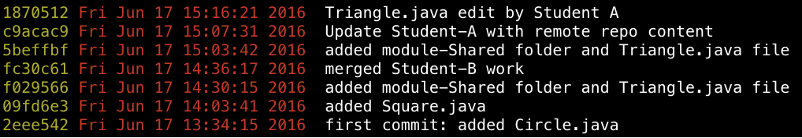

A second lab on the use of Git.
The lab describes how a two-person team might collaborate to use Git to manage a project. Individually owned and shared material is used to demonstrate where conflicts may be expected and how to resolve them when they arise.
Introduction.
 This lab follows on from the lab on basic git published earlier in the course.
This lab follows on from the lab on basic git published earlier in the course.
The lab begins with a brief description on single-user use of Git. An example of such use would be to manage a software development project where only one developer is involved.
The lab then progresses to the describe how two users might collaborate to use Git to manage a project.
In the lab, Student A will own module-A and Student B will own module-B. During the lab a shared module, module-Shared, will be developed.
You will see that each student can develop its lab without interference from the other. Neither student makes any changes to the other's code and so there is not risk of conflict arising. Conflict will be explained and demonstrated later. The repository will contain both modules and each student will be able to retain a local up-to-date version of the repository containing all modules.
The project directory structure will be as shown in Figure 1.
Each developer will have a local copy of the remote repository on its computer.
They will work from the command line principally but may also,optionally, observe the project's progress in Eclipse's Egit and Atlassian's SourceTree or other Git GUI software of their own choosing.
To commence the project, Student A will create the remote repo and generate and push the baseline project.
Student B will then make a contribution to the project.
Here are the features of git that will be exercised:
- Configure git on their respective computers:
- set their names and emails.
- assign a text editor.
- Create the remote repository.
- Clone the repository to their computers.
- Make several changes to the project.
- Add the changed project to the index (staging area).
- Commit the project to the local repository.
- Display the commit history using a range of format options.
- Roll back the most recent commit.
- Push commits to the remote repository.
- Exercise the fetch & merge commands (including resolving conflicts).
- Delete and then refresh the working tree from the remote repository.
- Create a branch from a commit positioned at some intermediate point along the main branch (master branch).
- Make a number of commits to this branch.
- Squash a subset of the commits into a single commit.
- Rebase the branch onto the master branch in a local repository.
- Merge the squashed branch with the remote master.
- Create and examine the implications of a detatched HEAD.
- Create, add, delete tags.
- Push tags to remote repository.
- Checkout a selected commit based on its tag.
- Checkout a branch.
- View the commit history.
Student A

Page contents
- Create remote repo.
- Create a local repo.
- Set up remote repo to track local repo.
- Create baseline project locally, add and commit to repo.
- Push local repo to remote.
- Print logs.
Action
Student A will now do the following:
- Create a remote repository.
- Create local repository directory.
- Create a module (a folder) containing a file.
- Stage, commit and push to remote (origin).
- Display the commit history.
- Grant write access to Student B to the remote repo.
Create Local Repository
- Create a folder on your computer named gitlab.
- cd into it into a terminal.
- Create a subfolder named module-A.
- Add a file named Circle.java to module-A.
- Create a git repository.
- Add all newly created content.
Here are the commands:
cd gitlab
mkdir module-A
echo Circle.java > module-A/Circle.java
git add .
git commit -m 'first commit: added Circle.java'Open Circle.java in an editor and add content:
/**
* A circle that can be manipulated and that draws itself on a canvas.
* @author student A
*/
public class Circle
{
}Create Remote Repository
Create a remote repository on BitBucket called gitlab.
An easy option is to do so from within the BitBucket site.
Still in the gitlab folder, run these commands (as shown in Figure 2) but making appropriate substitution to your domain:
git remote add origin git@bitbucket.org:your domain/gitlab.git
git push -u origin --all
git push -u origin --tags- The first command establishes the tracking relationship between your local and remote repos.
- The remaining two commands push a copy of the local repo and any tags to Bitbucket.
- Ensure you include the -u switch on the first commit.
- Subsequent commits do not require either -u or --all, simply:
git push origin masterIf the push executes correctly then a response somewhat similar to that shown in Figure 3 will be generated:
Now let's examine the commit history:
git logThe response should be similar to that shown in Figure 4. Following the word commit is a 40 hex digit number. This is a SHA-1 message digest or hash value related to this commit. More, for convenience, usually we shall output a subset of the hash. This is illustrated in Figure 5.
For a more detailed history we could use the command:
git log --pretty=format:"%h %an %ar : %s"and obtain a response similar to the following:
Check the branches, local and origin with the command:
git branch -aStudent B

Page contents
- Clone a remote repo.
- Make changes.
- Stage & commit.
- Push updated local repo to remote.
- Inspect log.
Action
Now that Student A has created a local repository and pushed its baseline project, you Student B will:
- Clone the repository to your local working directory.
- Create a new file.
- Add the file to the repo, commit and push to remote.
In the terminal cd to repo folder and run this command, replacing the placeholder with your domain name:
git clone git@bitbucket.org:your domain/gitlab.gitNo conflicts were encountered because you did not have Circle.java in your repo. If Circle.java had been in your folder before executing pull and were it to have differed from the pulled version then a conflict would have arisen. We shall contrive an example to demonstrate this later in the lab.
Verify that the repository gitlab has been received by running the ls command.
- Change into gitlab and check the commit history. It should be similar to that shown in Figure 2. The hash and date values are likely to differ from yours.
- The file Circle.java was created and pushed to the remote repo by Student A. Provided Student A has not made any further changes to its repository subsequent to executing push, then both of you now have identical repos and these exactly match the remote repo in Bitbucket.
We shall now describe how to perform the following steps:
- Create module-B folder.
- Create Square.java in module-B.
- Add Square.java to your repo, commit and push to the remote.
The commands are shown here and the output should be similar to that shown in Figure 3.
cd gitlab
mkdir module-B
echo Square.java > module-B/Square.javaPlace this initial content in Square.java once you have created the file.
/**
* A square that can be manipulated and that draws itself on a canvas.
* @author student B
*/
public class Square
{
}Proceed with these commands:
git add .
git commit -m 'added Square.java'
git push
At this point your local repo and the remote repo are in sync but Student A's local repo has yet to be updated with the new material added in this step.
Shared module

Page contents
- Create shared content file.
- Add content.
- Push to remote.
- Perform a merge.
Student A
Create a shared folder named module-Shared and add a new file named Triangle.java to this folder.
mkdir module-Shared
echo Triangle.java > module-Shared/Triangle.javaCheck the status of the repo, noting the untracked, newly added module-Shared folder.
git statusAdd the new material to the local repo and check the status to verify. File Triangle.java and its containing folder are now staged, ready for a commit.
git add module-Shared
git statusCommit the new material, adding a suitable message.
git commit -m 'added module-Shared folder and Triangle.java file'A status check indicates the local repo is ahead of the remote.

Execute a push command. The push fails because we did not update our local repo before commencing work on it.
git pushResponding to the hint (as shown in Figure 6), we execute a pull command. This causes the default editor (example vi) to open so that a commit message may be provided. Refer to the Appendix if you require help with the vi editor commands.
Add the message and save the file.
- The local and remote repos should then be automatically merged without any conflicts arising.
- No conflicts arise in this instance because no attempt is made to overwrite a local file with different remote content while the merge process is underway.
Check the status of the repo and note it is two commits ahead of the remote.
Do not push. We are about to create a conflict to gain some experience in how to deal with such an issue.
Shared module

Page contents
- Add a shared folder.
- Add a file to the shared folder.
- Add and push to the remote tracking repo.
Student B
Student B shall now add a shared folder.
Repeat the actions of Student A: Create a shared folder named module-Shared and add a new file named Triangle.java to this folder.
mkdir module-Shared
echo Triangle.java > module-Shared/Triangle.javaCheck the status of the repo, noting the untracked, newly added module-Shared folder.
git statusAdd the new material to the local repo and check the status to verify. File Triangle.java and its containing folder are now staged, ready for a commit.
git add module-Shared
git statusCommit the new material, adding a suitable message.
git commit -m 'added module-Shared folder and Triangle.java file'A status check indicates the local repo is ahead of the remote.
Execute a push command. The push succeeds as indicated in Figure 15.
git pushThe remote repository was successfully updated with the latest copy of Student B local.
Shared module

Page contents
- Resolve issue of a failed push in attempting to update remote repo.
- Make change to local file.
- Add and push.
Student A
Check the status of the repo. Observe that it is 2 commits ahead of the remote. This is because Student A did not push its work before Student B added new material to the remote repo.
Execute a git push as recommended in Figure 16. The attempted push fails because "the remote contains work you do not have locally" as stated in the message shown in Figure 2.
Execute git pull. The result is shown in Figure 3. The remote content is fetched and an edit window opens to facilitate addition of a commit message.
- Add the message `Update Student-A with remote content' in the vi editor.
- Save the message. This should automatically exit the editor and perform a merge, generating the message
Merge made by the 'recursive' strategy.
Check the folder contents:
Check status: the working directory is clean but the local is 3 commits ahead of the remote.

Before updating remote make a change to the shared file Triangle.java:
/**
* A circle that can be manipulated and that draws itself on a canvas.
* @author student A
* @author student B
*/
public class Triangle
{
}Then add, commit and push.
git add .
git commit -m 'Triangle.java edit by Student A'
git push Run status command to check working directory clean.
Run status command to check working directory clean.
Print the log:

Shared module

Page contents
- Manually resolve a conflict.
Student B
Student B shall now create and resolve a conflict.
Do not execute a pull command.
Change Triangle.java to the following:
/**
* A Triangle that can be manipulated and that draws itself on a canvas.
* @author student A
* @author student B
*/
public class Triangle
{
double base = 100;
double height = 100;
public Triangle(double base, double height) {
this.base = base;
this.height = height;
}
}Then add, commit and push.
git add .
git commit -m 'Triangle.java edit by Student B'
git pushThe push was rejected for the reasons described in Figure 1.
Executing a pull command results in a further error message. See Figure 2.
Open Triangle.java. This is shown in Figure 3.
- Student B file is positioned between <<<<< HEAD and ======.
- Student A file is positioned between ===== and >>>>>>>.
- To resolve conflicts remove <<<< HEAD, ===== and >>>>>.
- Add correct file content.
- Save file.
- Run the following commands, studying the output in each case.
git status
git add .
git commit -m 'resolved conflicts Triangle.java'
git pushFinally, print the log:
Detached Head

Page contents
- Create a detached head.
- Resolve.
Student A & Student B
Action
- This step does not require use of the remote repository.
- Delete the local repository gitlab, recreate and add and commit a file name Circle.java
- Then make three commits of the test source file Circle.java, changing the file between commits.
- Check the log as before: you should see something like Figure 1.
rm -rf gitlab
mkdir gitlab
cd gitlab
git init
echo Circle.java > Circle.java
git add .
git commit -m '1st commit'
echo Circle.java 2nd commit > Circle.java
git add .
git commit -m '2nd commit'
echo Circle.java 3rd commit > Circle.java
git add .
git commit -m '3rd commit'Checkout the second commit.
git checkout 8cdbeceSee Figure 2 for the response to this checkout request.
Our working tree is now in the infamous detached head state which is not a good place to be.
Scenario 1
We can take immediate action to resolve this be simply checking out the master:
git checkout masterBut we're not quite done yet as there are many ways to really screw up, some - but not all - of which we'll deal with.
Scenario 2
Let's complicate the situation.
Checkout the second commit as before.
git checkout 8cdbeceAs experienced previously and as illustrated in Figure 2, this checkout will generate a detached HEAD warning.
Now, make a change to Circle.java, add and commit: here are the instructions and response (Figure 4).
The log output is shown in Figure 5.
Notice that the 3rd commit is not included.
Let's check what branches are present:
git branchHere's the output:
The master branch is present as one would expect. However an anonymous branch (detached from cc5990f) has also been created.
Let's clean this up as follows:
git branch branch-det-head
git checkout branch-det-headThese commands generate output similar to that shown in Figure 7.

What we have done is to create a new branch named branch-det-head and checked out this branch.
- We are now in a position to continue to make changes to the repository on this branch.
- Should we so wish, we could push this branch to the remote repository.
- Or we could, once development on this branch was completed, merge the branch into our master branch. This is dealt with in a later step.
Note that we could have combined these last two commands into a single command as follows:
git checkout -b branch-det-headgitignore
Scenario: you have forgotten somehow to exclude a file or folder from your .git repo, have already added the material to the index, committed and pushed to your remote repo. Now you wish to rectify the situation. Here is how to do so:
- Assume the folder you wish to exclude is
tmp. Add it to the .gitignore file and save.
// File: .gitignore
...
...
tmpRun these commands:
git rm -r --cache tmp
git commit -m 'excluding tmp & cleaning local cache' # or some such message
git push
Exercises
- Switch roles: that is, Student A assumes the role of Student B and vice versa. Then repeat the steps involving teamwork, namely 02 to 07 inclusive.
Vi Editor
Basic commands: these should be sufficient when using Git.
- Open a file:
- In a terminal cd to folder containing file.
- The following command opens the file in command mode.
vi filename
- Edit the file.
- Press the lower case letter i to switch to edit mode.
- The word INSERT will appear at the foot of the screen.
- Make the necessary changes.
- Press the ESC key to exit the edit mode and to enter the command mode.
- When command mode is entered the INSERT word disappears from the foot of the screen.
- Execute the following command to save the file:
Here is a list of further commands (use in command mode)::wq
A moves cursor to end line and switches to edit mode.
I moves cursor to start line and switches to edit mode.
e goes to the end of the next word.
w goes to the beginning of the next word.
b goes to the beginning of the previous word.
dd deletes the current line.
dw deletes the current word.The arrow keys may be used to move the cursor while in edit mode.